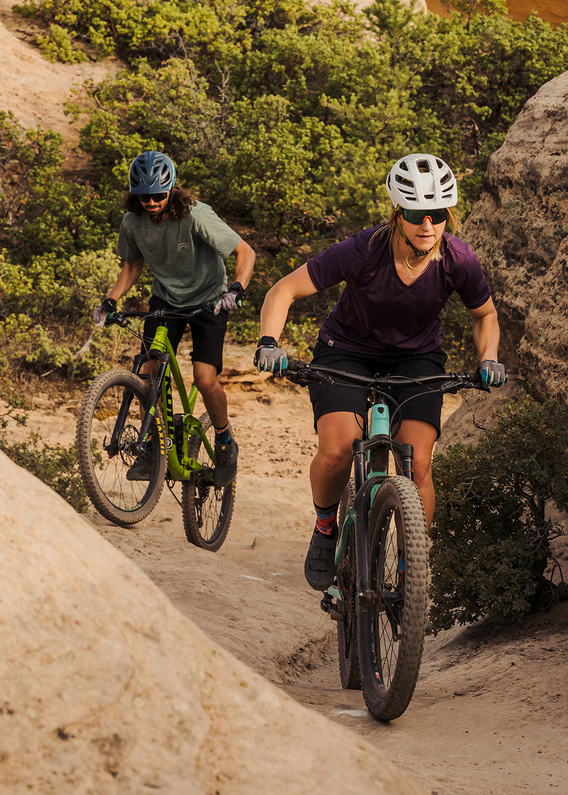

AL.BUTTERBRODT
Development + Design

SUMMARY
I am Alex Butterbrodt. Designer, endurance athlete, backcountry skier, and mountain biker.
I am a motivated and determined individual, not just in leading an active lifestyle,
but in my career as well.
EXPERIENCE
Junior UX/UI Designer
Hanai Health—She|Her App Development
February 2023-February 2024
- Managed relationship and communication with client, users and UX Design team. Developed the scope of work, timeline and established expectations on the project.
- Provided sketches, built the low-fidelity + high-fidelity prototype.
- Developed and designed branding for the She|Her app. Color palette, icon library, graphic elements, logo and app icon.
Senior Graphic Designer
PeopleForBikes, Boulder, CO
January 2017-present
- Develop creative designs for print materials, apparel + merchandise, presentations, videos, and campaign websites.
- Coordinate with external vendors and suppliers to verify the quality and accuracy of printed materials.
- Develop and evolve brand guidelines, through color, typography, photography, messaging and vision.
- Build wire frames and prototypes, develop branding, graphics, select images, and coordinate copy writing to craft content and deploy websites.
- Work with internal stakeholders to gather and define requirements, establish scopes, and manage project milestones.
- Collaborate with contract designers and photographers. Provide feedback and guidance on brand guidelines to ensure success.
- Worked with design systems to develop and present prototypes.
Prototyper
BOA Fit Systems, Denver, CO
April 2014-Semptember 2016
- Built, tested, and inspected sales prototypes for performance characteristics, quality, and adherence to customer specifications.
- Developed and prepared reports and technical documentation of installation processes using Adobe Photoshop, Illustrator, and InDesign.
- Set up product photography shots. Produced multiple views of each product and digitally edited photos to enhance appearance.
- Selected material quantities or processing methods needed to achieve the final goal of a product.
EDUCATION
Udemy 2024 Web Development Boot Camp
Currently Enrolled
General Assembly—User Experience Design
09/2022-03/2023
Arizona State University
Bachelors of Science—Visual Communication Design
SKILLS
- Adobe Creative Suite ⭐️⭐️⭐️⭐️⭐️
- Illustrator 🎨
- InDesign 📖
- Photoshop 📸
- Art + Creative Direction ⭐️⭐️⭐️⭐️⭐️
- Figma, Sketch + Adobe XD ⭐️⭐️⭐️⭐️⭐️
- Team + Project Management ⭐️⭐️⭐️⭐️⭐️